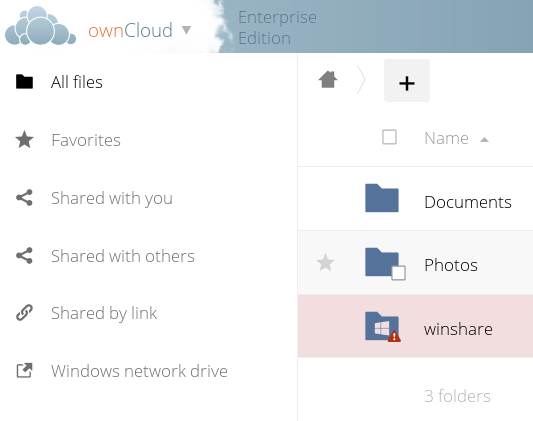

Installing and Configuring the External Storage: Windows Network Drives App¶
The External Storage: Windows Network Drives app creates a control panel in your Admin page for seamlessly integrating Windows and Samba/CIFS shared network drives as external storages.
Any Windows file share and Samba servers on Linux and other Unix-type operating systems use the SMB/CIFS file-sharing protocol. The files and directories on the SMB/CIFS server will be visible on your Files page just like your other ownCloud files and folders.
They are labeled with a little four-pane Windows-style icon, and the left pane of your Files page includes a Windows Network Drive filter. Figure 1 shows a new Windows Network Drive share marked with red warnings.
These indicate that ownCloud cannot connect to the share because it requires the user to login, it is not available, or there is an error in the configuration.

Figure 1: Windows Network Drive share on your Files page.
Files are synchronized bi-directionally, and you can create, upload, and delete files and folders. ownCloud server admins can create Windows Network Drive mounts and optionally allow users to set up their own personal Windows Network Drive mounts.
Depending on the authentication method, passwords for each mount are encrypted and stored in the ownCloud database, using a long random secret key stored in config.php, which allows ownCloud to access the shares when the users who own the mounts are not logged in.
Or, passwords are not stored and available only for the current session, which adds security.
Installation¶
Install the External Storage: Windows Network Drives app from the ownCloud Market App or ownCloud Marketplace. For it to work, there are a few dependencies to install.
- A Samba client. This is included in all Linux distributions. On Debian, Ubuntu, and other Debian derivatives it is called
smbclient. On SUSE, Red Hat, CentOS, and other Red Hat derivatives it issamba-client. php-smbclient(version 0.8.0+). It should be included in most Linux distributions. You can use eduardok/libsmbclient-php, if your distribution does not provide it.whichandstdbuf. These should be included in most Linux distributions.
Example¶
Assuming that your ownCloud installation is on Ubuntu, then the following commands will install the required dependencies:
# Install core packages
sudo apt-get update -y
sudo apt-get install -y smbclient php-smbclient coreutils
Other method using PECL is:
# Install php-smbclient using PECL
pecl install smbclient
# Install it from source
git clone git://github.com/eduardok/libsmbclient-php.git
cd libsmbclient-php ; phpize
./configure
make
sudo make install
Note
Regardless of the method you use, remember to check if an smbclient.ini file exists in /etc/php/<your php version>/mods-available and contains the following line:
extension="smbclient.so"
If so, then make it available via by running the following command:
sudo phpenmod -v ALL smbclient
Personal WND Mounts¶
Users create their own WND mounts on their Personal pages. These are created the same way as Admin-created shares. Users have four options for login credentials:
- Username and password
- Log-in credentials, save in session
- Log-in credentials, save in database
- Global credentials
libsmbclient Issues¶
If your Linux distribution ships with libsmbclient 3.x, which is included in the Samba client, you may need to set up the HOME variable in Apache to prevent a segmentation fault.
If you have libsmbclient 4.1.6 and higher it doesn’t seem to be an issue, so you won’t have to change your HOME variable.
To set up the HOME variable on Ubuntu, modify the /etc/apache2/envvars file:
unset HOME
export HOME=/var/www
In Red Hat/CentOS, modify the /etc/sysconfig/httpd file and add the following line to set the HOME variable in Apache:
export HOME=/usr/share/httpd
By default, CentOS has activated SELinux, and the httpd process can not make outgoing network connections.
This will cause problems with the curl, ldap and samba libraries.
You’ll need to get around this to make this work. First, check the status:
getsebool -a | grep httpd
httpd_can_network_connect --> off
Then enable support for network connections:
setsebool -P httpd_can_network_connect 1
In openSUSE, modify the /usr/sbin/start_apache2 file:
export HOME=/var/lib/apache2
Restart Apache, open your ownCloud Admin page and start creating SMB/CIFS mounts.
Windows Network Drive Listener¶
The SMB protocol supports registering for notifications of file changes on remote Windows SMB storage servers.
Notifications are more efficient than polling for changes, as polling requires scanning the whole SMB storage.
ownCloud supports SMB notifications with an occ command, occ wnd:listen.
Note
The notifier only works with remote storage on Windows servers. It does not work reliably with Linux servers due to technical limitations.
Your smbclient version needs to be 4.x, as older versions do not support notifications.
The ownCloud server needs to know about changes to files on integrated storage so that the changed files will be synced to the ownCloud server, and to desktop sync clients.
Files changed through the ownCloud Web Interface, or sync clients are automatically updated in the ownCloud file cache, but this is not possible when files are changed directly on remote SMB storage mounts.
To create a new SMB notification, start a listener on your ownCloud server with occ wnd:listen.
The listener marks changed files, and a background job updates the file metadata.
Windows network drive connections and setup of occ wnd:listen often does not always work the first time.
If you encounter issues using it, then try the following troubleshooting steps:
- Check the connection with smbclient on the command line of the ownCloud server
Take the example of attempting to connect to the share named MyData using occ wnd:listen.
Running the following command would work:
sudo -u www-data ./occ wnd:listen MyHost MyData svc_owncloud password
However, running this command would not:
sudo -u www-data ./occ wnd:listen MyHost mydata svc_owncloud password
Setting Up the WND Listener¶
The WND listener for ownCloud 10 includes two different commands that need to be executed:
wnd:listen¶
This command listens and stores notifications in the database coming from one specific host and share. It is intended to be run as a service. The command requires the host and share, which the listener will listen to, and the Windows/Samba account that will listen. The command does not produce any output by default, unless errors happen.
Note
You can increase the command’s verbosity by using -vvv.
Doing so displays what the listener is doing, including a timestamp and the notifications received.
Note
Although the exact permissions required for the Windows account are unknown, read-only should be enough.
The simplest way to start the wnd:listen process manually, perhaps for initial testing, is as follows
sudo -u www-data ./occ wnd:listen <host> <share> <username>
The password is an optional parameter and you’ll be asked for it if you didn’t provide it, as in the example above.
In order to start the wnd:listen without any user interaction, provide the password as the user’s 4th parameter, as in the following example:
sudo -u www-data ./occ wnd:listen <host> <share> <username> <password>
For additional options to provide the password, check Password Options
Note that in any case there won’t be any processing of the password by default.
This means that spaces or newline chars won’t be removed unless explicitly told.
Use the --password-trim option in those cases.
You should be able to run any of those commands, and/or wrap them into a systemd service or any other startup service, so that the wnd:listen command is automatically started during boot, if you need it.
wnd:process-queue¶
This command processes the stored notifications for a given host and share.
This process is intended to be run periodically as a Cron job, or via a similar mechanism.
The command will process the notifications stored by the wnd:listen process, showing only errors by default.
If you need more information, increase the verbosity by calling wnd:process-queue -vvv.
As a simple example, you can check the following:
sudo -u www-data ./occ wnd:process-queue <host> <share>
You can run that command, even if there are no notifications to be processed.
As said, you can wrap that command in a Cron job so it’s run every 5 minutes for example.
Basic Setup for One ownCloud Server¶
First, go to the admin settings and set up the required WND mounts. Be aware though, that there are some limitations. These are:
- We need access to the Windows account password for the mounts to update the file cache properly. This means that “login credentials, saved in session” won’t work with the listener. “login credentials, saved in DB” should work and could be the best replacement.
- The
$userplaceholder in the share, such as//host/$user/path/to/root, for providing a share which is accessible per/user won’t work with the listener. This is because the listener won’t scale, as you’ll need to setup one listener per/share. As a result, you’ll end up with too many listeners. An alternative is to provide a common share for the users and use the$userplaceholder in the root, such as//host/share/$user/folder.
Second, start the wnd:listen process if it’s not already started, ideally running it as a service.
If it isn’t running, no notification are stored.
The listener stores the notifications.
Any change in the mount point configuration, such as adding or removing new mounts, and logins by new users, won’t affect the behavior, so there is no need to restart the listener in those cases.
In case you have several mount point configurations, note that each listener attaches to one host and share.
If there are several mount configurations targeting different shares, you’ll need to spawn one listener for each.
For example, if you have one configuration with 10.0.0.2/share1 and another with 10.0.0.2/share2, you’ll need to spawn 2 listeners, one for the first configuration and another for the second.
Third, run the wnd:process-queue periodically, usually via a Cron job.
The command processes all the stored notifications for a specific host and share.
If you have several, you could set up several Cron jobs, one for each host and share with different intervals, depending on the load or update urgency.
As a simple example, you could run the command every 2 minutes for one server and every 5 minutes for another.
As said, the command processes all the stored notifications, squeeze them and scan the resulting folders.
The process might crash if there are too many notifications, or if it has too many storages to update.
The --chunk-size option will help by making the command process all the notifications in buckets of that size.
On the one hand the memory usage is reduced, on the other hand there is more network activity. We recommend using the option with a value high enough to process a large number of notifications, but not so large to crash the process. Between 200 and 500 should be fine, and we’ll likely process all the notifications in one go.
Password Options¶
There are several ways to supply a password:
Interactively in response to a password prompt.
sudo -u www-data ./occ wnd:listen <host> <share> <username>
Sent as a parameter to the command.
sudo -u www-data ./occ wnd:listen <host> <share> <username> <password>
Read from a file, using the
--password-fileswitch to specify the file to read from. Note that the password must be in plain text inside the file, and neither spaces nor newline characters will be removed from the file by default, unless the--pasword-trimoption is added. The password file must be readable by the apache user (or www-data)sudo -u www-data ./occ wnd:listen <host> <share> <username> \ --password-file=/my/secret/password/file
sudo -u www-data ./occ wnd:listen <host> <share> <username> \ --password-file=/my/secret/password/file --password-trim
Note
If you use the
--password-fileswitch, the entire contents of the file will be used for the password, so please be careful with newlines.Warning
If using
--password-filemake sure that the file is only readable by the apache / www-data user and inaccessible from the web. This prevents tampering or leaking of the information. The password won’t be leaked to any other user usingps.Using 3rd party software to store and fetch the password. When using this option, the 3rd party app needs to show the password as plaintext on standard output.
3rd Party Software Examples¶
cat /tmp/plainpass | sudo -u www-data ./occ wnd:listen <host> <share> <username> --password-file=-
This provides a bit more security because the /tmp/plainpass password should be owned by root and only root should be able to read the file (0400 permissions); Apache, particularly, shouldn’t be able to read it.
It’s expected that root will be the one to run this command.
base64 -d /tmp/encodedpass | sudo -u www-data ./occ wnd:listen <host> <share> <username> \
--password-file=-
Similar to the previous example, but this time the contents are encoded in Base64 format (there’s not much security, but it has additional obfuscation).
Third party password managers can also be integrated. The only requirement is that they have to provide the password in plain text somehow. If not, additional operations might be required to get the password as plain text and inject it in the listener.
As an example:
You can use “pass” as a password manager. You can go through http://xmodulo.com/manage-passwords-command-line-linux.html to setup the keyring for whoever will fetch the password (probably root) and then use something like the following
pass the-password-name | sudo -u www-data ./occ wnd:listen <host> <share> <username> --password-file=-
Password Option Precedence¶
If both the argument and the option are passed, e.g., occ wnd:listen <host> <share> <username> <password> --password-file=/tmp/pass, then the --password-file option will take precedence.
Optimizing wnd:process-queue¶
Note
Do not use this option if the process-queue is fast enough. The option has some drawbacks, specifically regarding password changes in the backend.
wnd:process-queue creates all the storages that need to be updated from scratch.
To do so, we need to fetch all the users from all the backends (currently only the ones that have logged in at least once because the others won’t have the storages that we’ll need updates).
To optimize this, wnd:process-queue make use of two switches: “–serializer-type” and “–serializer-params”.
These serialize storages for later use, so that future executions don’t need to fetch the users, saving precious time — especially for large organizations.
| Switch | Allowed Values |
|---|---|
--serializer-type |
file. Other valid values may be added in the future, as more
implementations are requested. |
--serializer-params |
Depends on --serializer-type, because those will be the parameters
that the chosen serializer will use. For the file serializer, you
need to provide a file location in the host FS where the storages will
be serialized. You can use --serializer-params file=/tmp/file as an
example. |
While the specific behavior will depend on the serializer implementation, the overall behavior can be simplified as follows:
If the serializer’s data source (such as a file, a database table, or some Redis keys) has storage data, it uses that data to create the storages; otherwise, it creates the storages from scratch.
After the storages are created, notifications are processed for the storages. If the storages have been created from scratch, those storages are written in the data source so that they can be read on the next run.
Note
It’s imperative to periodically clean up the data source to fetch fresh data, such as for new storages and updated passwords. There isn’t a generic command to do this from ownCloud, because it depends on the specific serializer type. Though this option could be provided at some point if requested.
The File Serializer¶
The file serializer is a serializer implementation that can be used with the wnd:process-queue command.
It requires an additional parameter where you can specify the location of the file containing the serialized storages.
There are several things you should know about this serializer:
- The generated file contains the encrypted passwords for accessing the backend. This is necessary in order to avoid re-fetching the user information, when next accessing the storages.
- The generated file is intended to be readable and writable only for the web server user. Other users shouldn’t have access to this file. Do not manually edit the file. You can remove the file if it contains obsolete information.
Usage Recommendations¶
Number of Serializers¶
Only one file serializer should be used per server and share, as the serialized file has to be per server and share. Consider the following usage scenario:
- If you have three shares:
10.0.2.2/share1,10.0.2.2/share2, and10.0.10.20/share2, then you should use three different calls townd:process-queue, changing the target file for the serializer for each one.
Since the serialized file has to be per server and share, the serialized file has some checks to prevent misuse. Specifically, if we detect you’re trying to read the storages for another server and share from the file, the contents of the file won’t be read and will fallback to creating the storage from scratch. At this point, we’ll then update the contents of that file with the new storage.
Doing so, though, creates unneeded competition, where several process-queue will compete for the serializer file. For example, let’s say that you have two process-queues targeting the same serializer file. After the first process creates the file the second process will notice that the file is no longer available. As a result, it will recreate the file with new content.
At this point the first process runs again and notices that the file isn’t available and recreate the file again. When this happens, the serializer file’s purpose isn’t fulfilled As a result, we recommend the use of a different file per server and share.
File Clean Up¶
The file will need to cleaned up from time to time. The easiest way to do this is to remove the file when it is no longer needed. The file will be regenerated with fresh data the next execution if the serializer option is set.
Interaction Between Listener, Serializer, and Windows Password Lockout¶
Windows supports password lockout policies. If one is enabled on the server where an ownCloud share is located, and a user fails to enter their password correctly several times, they may be locked out and unable to access the share.
This is a known issue that prevents these two inter-operating correctly.
Currently, the only viable solution is to ignore that feature and use the wnd:listen and wnd:process-queue, without the serializer options.
There is also an additional issue to take into account though, which is that parallel runs of wnd:process-queue might lead to a user lockout.
The reason for this is that several wnd:process-queue might use the same wrong password because it hasn’t been updated by the time they fetch it.
As a result, it’s recommended to force the execution serialization of that command to prevent this issue. You might want to use Anacron, which seems to have an option for this scenario, or wrap the command with flock.
If you need to serialize the execution of the wnd:process-queue, check the following example with flock
flock -n /my/lock/file sudo -u www-data ./occ wnd:process-queue <host> <share>
In that case, flock will try get the lock of that file and won’t run the command if it isn’t possible.
For our case, and considering that file isn’t being used by any other process, it will run only one wnd:process-queue at a time.
If someone tries to run the same command a second time while the previous one is running, the second will fail and won’t be executed.
Check flock’s documentation for details and other options.
Multiple Server Setup¶
Setups with several servers might have some difficulties in some scenarios:
- The
wnd:listencomponent might be duplicated among several servers. This shouldn’t cause a problem, depending on the limitations of the underlying database engine. The supported database engines should be able to handle concurrent access and de-duplication. - The
wnd:process-queueshould also be able to run from any server, however limitations for concurrent executions still apply. As a result, you might need to serialized command execution of thewnd:process-queueamong the servers (to avoid for the password lockout), which might not be possible or difficult to achieve. You might want to execute the command from just one specific server in this case. wnd:process-queue+ serializer. First, check the above section to know the interactions with the password lockout. Right now, the only option you have to set it up is to store the target file in a common location for all the server. We might need to provide a specific serializer for this scenario (based on Redis or DB)
Basic Command Execution Examples¶
sudo -u www-data ./occ ``wnd:listen`` host share username password
sudo -u www-data ./occ ``wnd:process-queue`` host share
sudo -u www-data ./occ ``wnd:process-queue`` host share -c 500
sudo -u www-data ./occ ``wnd:process-queue`` host share -c 500 \
--serializer-type file \
--serializer-params file=/opt/oc/store
sudo -u www-data ./occ ``wnd:process-queue`` host2 share2 -c 500 \
--serializer-type File \
--serializer-params file=/opt/oc/store2
To set it up, make sure the listener is running as a system service:
sudo -u www-data ./occ ``wnd:listen`` host share username password
Setup a Cron job or similar with something like the following two commands:
sudo -u www-data ./occ wnd:process-queue host share -c 500 \
--serializer-type file \
--serializer-params file=/opt/oc/store1
rm -f /opt/oc/store1 # With a different schedule
The first run will create the /opt/oc/store1 with the serialized storages, the rest of the executions will use that file.
The second Cron job, the one removing the file, will force the wnd:process-queue to refresh the data.
It’s intended to be run in a different schedule, so there are several executions of the wnd:process-queue fetching the data from the file.
Note that the file can be removed manually at any time if it’s needed (for example, the admin has reset some passwords, or has been notified about password changing).